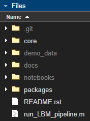

0.1. Project Setup#
Installation#
Users with git experience are encouraged to skip to the git installation section. This option avoids the need repeat the download process each time a new version of the pipeline is produced.
From Source#
The easiest way to download the source code is to visit the github repository, download the project via the Download ZIP button.
Move/extract the downloaded folder into a folder on your userpath.
Example: Find MATLAB userpath
In the MATLAB Command-Window:
>>> userpath
ans =
'/home/<username>/Documents/MATLAB'
All files located in this path will be fully accessable.
You can tell if the pipeline is added successfully to the path by looking at the file window.
{kind=link}
Here, /core and /packages are both bright in the files window, this indicates those folders are properly in the MATLAB path.
These two folders contain all of the code the pipeline needs to run and are the only two folders that must be on the path.
If either of these folders is not bright, right-click on the folder and “Add to path -> Selected Folders and Subfolders”
Alternatively, you can create a startup.m file located in this same userpath directory: ~/Documents/MATLAB/startup.m and add the following code snippet:
% <HOME>/Documents/MATLAB/startum.m
% note "fullfile" isnt needed, but helpfully provides directory autocompletion
addpath(genpath(fullfile("path/to/caiman_matlab")))
There is a sample setup.m file located at the root of this repository.
With git#
Modern versions of matlab (2017+) solve most Linux/Windows filesystem conflicts. Installation is similar independent of OS.
Windows#
The easiest method to download this repository with git is via mysys
Note
If you have MATLAB installed on Windows, you won’t be able to run commands from within WSL (i.e. //wsl.localhost/) due to the separate filesystems. Pay attention to which environment you install.
WSL2 (Windows Subsystem for Linux)#
Windows subsystem for Linux (WSL/WSL2) is a local environment on your windows machine that is capable of running linux commands using a separate filesystem.
As of 2024, Mathworks does not officially support and is not planning support for MATLAB on WSL or WSL2.
If you have MATLAB installed on Windows and wish to use this repository from a WSL instance, see this discussion on how to accomplish this.
This means you will not be able to run matlab from the WSL filesystem (i.e. //wsl.localhost/), but you can use a mounted C:// drive path like so:
$ cd /mnt/c/Users/<Username>/<project-install-path>
This pipeline has been tested on WSL2, Ubuntu 22.04.
Though any debian-based distribution should work.
Linux#
In Linux, WSL or mysys, clone this repository with the pre-installed git client:
$ cd ~/Documents/MATLAB
$ git clone https://github.com/ru-rbo/caiman_matlab.git
$ cd caiman_matlab
$ matlab
Dependencies#
Before running your first dataset, you should ensure that all dependencies of the pipeline are satisfied.
This pipeline requires the parallel pool, statistics and machine learning, and image processing toolboxes.
To see what toolboxes you have installed, use ver in the MATLAB command window:
>> ver
----------------------------------------------------------------------------------------------------------------
MATLAB Version: 24.1.0.2537033 (R2024a)
MATLAB License Number: 41007384
Operating System: Linux 6.2.0-36-generic #37~22.04.1-Ubuntu SMP PREEMPT_DYNAMIC Mon Oct 9 15:34:04 UTC 2 x86_64
Java Version: Java 1.8.0_202-b08 with Oracle Corporation Java HotSpot(TM) 64-Bit Server VM mixed mode
----------------------------------------------------------------------------------------------------------------
MATLAB Version 24.1 (R2024a)
Computer Vision Toolbox Version 24.1 (R2024a)
Curve Fitting Toolbox Version 24.1 (R2024a)
Global Optimization Toolbox Version 24.1 (R2024a)
Image Processing Toolbox Version 24.1 (R2024a)
Optimization Toolbox Version 24.1 (R2024a)
Parallel Computing Toolbox Version 24.1 (R2024a)
Signal Processing Toolbox Version 24.1 (R2024a)
Statistics and Machine Learning Toolbox Version 24.1 (R2024a)
Wavelet Toolbox Version 24.1 (R2024a)
If the user choses to split frames across multiple .tiff files, there will be multiple tiff files in ascending order
of an suffix appended to the filename: _000N, where n=number of files chosen by the user.
Important
All output .tiff files for a single imaging session should be placed in the same directory. No other .tiff files should be in this directory. If this happens, an error will throw.
Directory Structure#
The following is an example of the directory hierarchy used for the demo.
Parent/
├── raw/
│ └── basename_00001_0001.tiff
│ └── basename_00001_0002.tiff
│ └── basename_00001_00NN.tiff
├── extraction/
│ └── basename_plane_1.h5
│ └── basename_plane_2.h5
│ └── basename_plane_NN.h5
│ └── figures/
│ └── scan_offset_validation.png
│ └── roi_1_offset_validation.png
│ └── roi_2_offset_validation.png
│ └── roi_N_offset_validation.png
├── registration/
│ └── motion_corrected_plane_1.h5
│ └── motion_corrected_plane_2.h5
│ └── motion_corrected_plane_NN.h5
│ └── figures/
│ └── motion_corrected_metrics_plane_1.png
│ └── motion_corrected_metrics_plane_2.png
│ └── motion_corrected_metrics_plane_RR.png
└── segmentation/
│ └── segmented_plane_1.h5
│ └── segmented_plane_2.h5
│ └── segmented_plane_NN.h5
└── axial_correction/
└── collated_caiman_minSNR_1.h5
*`N` = the number of `[Y, X, T]` planar time-series.
*`R` = the number of `[Y, X, T]` ROI's per scanfield.
Following the recommendation described in the Installation guide all necessary functions should already be on your MATLAB path.
If “Undefined Function” error occurs, such as:
Undefined function {code}'convertScanImageTiffToVolume' for input arguments of type 'char'.
This means the input is not on your MATLAB path.
Add this to the top of the script you are running:
[fpath, fname, ~] = fileparts(fullfile(mfilename('fullpath'))); % path to this script
addpath(genpath(fullfile(fpath, 'core/')));
You can make sure all of the requirements for the package are in the path with the following:
result = validate_toolboxes(); % make sure we have dependencies in accessible places
if ischar(result)
error(result);
else
disp('Proceeding with execution...');
end
It is helpful to first set-up directories where youd like your results to go.
Following the demo Directory Structure:
{kind=link}